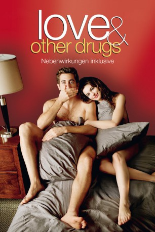

#5021 Love and other Drugs - Nebenwirkung inklusive
Alternativ: Love & Other Drugs
 
 IMDB-Wertung: 6.7 / 10
IMDB-Wertung: 6.7 / 10  Metascore: 0
Metascore: 0 
Jamie Reidy ist so etwas wie der Don Juan der Pharmazeutika Branche. Jung und dynamisch, surft er auf einer Welle des Erfolges. Die Frauen liegen dem Vertreter zu Füßen – der auch noch das Glück hat, am rechten Fleck zu rechten Zeit zu sein: Viagra erscheint Mitte der 1990er auf dem Markt und Jamie ist genau der Richtige es an den Mann zu bringen. Doch Jamies Leben wird bedeutend komplizierter, als er die emotional abgeklärte, dafür aber sexuell außergewöhnlich offene Künsterin Maggie kennenlernt. Ihre anfangs rein körperlich Beziehung erhält eine überraschende Wendung, als Jamie festellt, dass er Maggie liebt. Doch diese will keine Gefühle zulassen. Maggie hat Parkinson.
Jahr: 2010
Dauer: 112 Minuten
FSK: 12
Land: USA Studio: 20th Century FoxTonspuren: DTS - ,
Untertitel:
Auflösung: 1080p (1920x1040) Größe: 8458 MB
Genre: Drama, Komödie, Liebe
Regisseur:
Drehbuch: Ron J. Friedman
Soundtrack:
Darsteller:
 Jake Gyllenhaal als Jamie Randall
Jake Gyllenhaal als Jamie Randall Anne Hathaway als Maggie Murdock
Anne Hathaway als Maggie Murdock Oliver Platt als Bruce Winston
Oliver Platt als Bruce Winston Hank Azaria als Dr. Stan Knight
Hank Azaria als Dr. Stan Knight Josh Gad als Josh Randall
Josh Gad als Josh Randall Gabriel Macht als Trey Hannigan
Gabriel Macht als Trey Hannigan Judy Greer als Cindy
Judy Greer als Cindy George Segal als Dr. James Randall
George Segal als Dr. James Randall- Jill Clayburgh als Nancy Randall
- Kate Jennings Grant als Gina
 Katheryn Winnick als 'Lisa'
Katheryn Winnick als 'Lisa' Kimberly Scott als Gail
Kimberly Scott als Gail- Peter Friedman als California Man
- Nikki Deloach als Christy
 Natalie Gold als Dr. Helen Randall
Natalie Gold als Dr. Helen Randall Megan Ferguson als Farrah
Megan Ferguson als Farrah- Michael Benjamin Washington als Richard
- Dorothy Silver als Sophie
 Michael Chernus als Jerry
Michael Chernus als Jerry- Kate Easton als Amber
 Michael Buffer als Pfizer Convention MC
Michael Buffer als Pfizer Convention MC- Maite Schwartz als Texas
- Maximilian Osinski als Ned
- Ian Harding als Pfizer Trainee #1
- Josh Breslow als Pfizer Trainee #2
- Constance Brenneman als Pfizer Trainee #5
- Nicole Thomas als Pfizer Trainee #6
- Kwame Rakes als Doctor in Parking Lot
 Scott Cohen als Ted Goldstein
Scott Cohen als Ted Goldstein Sharon Wilkins als La Boheme Receptionist
Sharon Wilkins als La Boheme Receptionist Brian Hutchison als Homeless Man
Brian Hutchison als Homeless Man- Lisa Ann Goldsmith als Nurse Janice
- Rick Applegate als Viagra Doctor
- Jean Zarzour als Viagra Sample Nurse
- Jennifer Delaeo als Viagra Receptionist
 Deidre Goodwin als Viagra Nurse #1
Deidre Goodwin als Viagra Nurse #1 Geneva Carr als Viagra Nurse #2
Geneva Carr als Viagra Nurse #2- Vanessa Aspillaga als Viagra Nurse #3
- Larissa S. Emanuele als Convention Girl #2
- Loretta Higgins als PET Scan Doctor
- Jason Bernard als Quack Doctor
- Jo Newman als Bree
- Christina Fandino als Khae
 Teri Clark als ER Receptionist
Teri Clark als ER Receptionist- Kevin McClatchy als Justin
 Jaimie Alexander als Carol , uncredited
Jaimie Alexander als Carol , uncredited Aaron Bernard als Bartender , uncredited
Aaron Bernard als Bartender , uncredited- Nicole George als Viagra Receptionist , uncredited
- Mark Golik als Physician , uncredited
 John W. Iwanonkiw als Viagra Guy #1 , uncredited
John W. Iwanonkiw als Viagra Guy #1 , uncredited
Datei: X:\2010(G-M)\Love and other Drugs - Nebenwirkung inklusive (2010, FSK12, 1920x1040).mkv seit 19.12.2016
Festplatte: HD 2010(G-Z)-2011(A-F)
 Es gibt insgesamt 85 Filme in der Gruppe '2010(G-M)'
Es gibt insgesamt 85 Filme in der Gruppe '2010(G-M)'